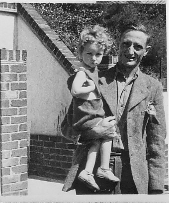
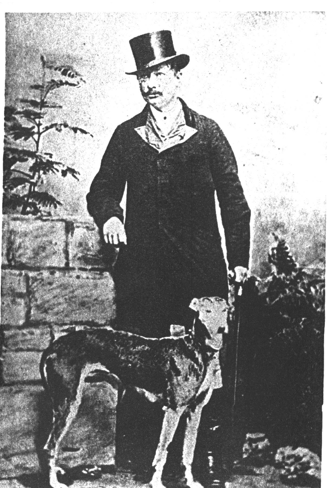

Born: 24 May 1937, Newmarket
Mum and younger sister Ginny
Married: 6 Nov 1957, Adrian James Marshall at St Andrews the Great, Cambridge
Born: 20 Mar 1908, East Hendred, Berkshire

Married: 24 Apr 1936, New Zealand. Isabella Ruby McIvor (see McIvor page)
Died: Nov 1985.
Born: 27 Aug 1861, St Heliers, Jersey.
Married: 1899, Winifred Anne Follett
Children: Louisa Catherine; Thomas Robert; Harry (Ted) Wilson; Richard
Died: 13 Sep 1917

William Henry Sowdon and his
lurcher Marchioness.
Born: 22 July 1837, Swiss Cottage, Kings Road, Reading, Berks.
Married: 1860, St Saviours, Jersey. Matilda Louisa Hutton
Children: Harry Wilson; Eleanor Matilda; Louisa Catherine
Divorced: 19 February 1867. Remarried Annie Wright 22 April 1867, Southampton.
Died: 17 November 1869, Winchester of Diphtheria and Paralysis.
Born: 04 Jan 1799, Reading.
Married: 07 Mar 1833, Louisa Lomer (See Wilson Lomer).
Children: Catherine, William Henry, Anna Louisa
Died: 03 Aug 1862, Reading.
Born: 06 May 1759, Reading.
Married: Eleanor Smith
Children: Thomas Frederick, Harry, Charlotte, Richard, Louisa, Eleanor, Maria, Eliza, Mary Ann, Alfred
Died: 23 Nov 1829, Reading.
Born: abt 1718.
Married: 24 Feb 1753, Sarah Knight, St George's Chapel, Hyde Park Corner, Mayfair, London
Died: 13 Apr 1791, Reading.
Born:
Married:
Died: Jul 1747, Parish of St George the Martyr, Surrey.